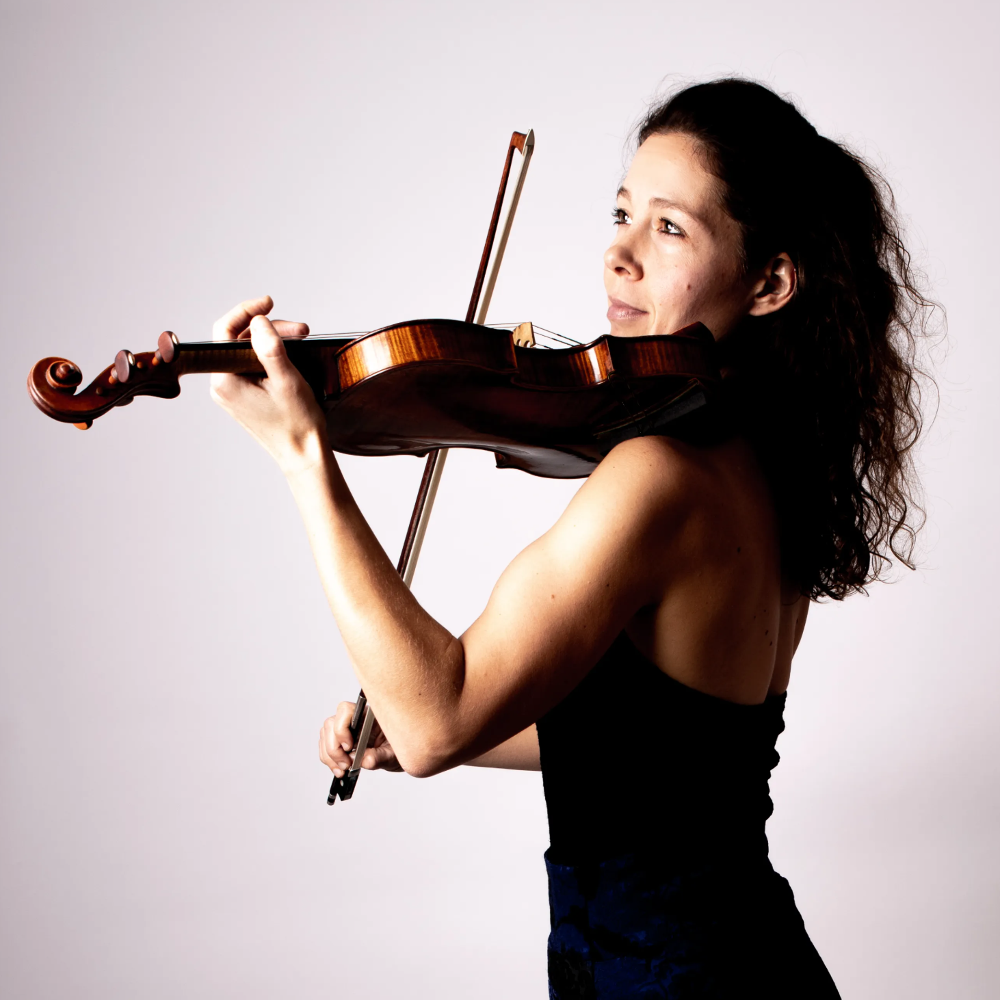

Lisanne Soeterbroek
VioolLisanne Soeterbroek, geboren te Sittard (NL), studeerde bij Coosje Wijzenbeek en Vera Beths aan het Koninklijk Conservatorium in Den Haag. Zij sloot haar Masterstudie af met een 10 met onderscheiding voor ‘all-round musician’. Hierna volgde zij een Postgraduate Study in Graz (A) bij Prof. Eszter Haffner.
Sinds 2013 is zij aangesteld als eerste concertmeester van het Antwerp Symphony Orchestra. In 2020 bracht zij een solo-CD uit met werken van Bach en Andriessen bij het label ‘7 Mountain Records’.
Sinds 2023 is zij aangesteld als Hoofdvakdocent Viool aan het Codarts Conservatorium Rotterdam.
Lisanne won diverse nationale en internationale prijzen bij concoursen als het Padova International Music Competition 2012, het Oskar Back Nationaal Vioolconcours 2007 & 2011, het International Solo Violin Competition Cremona 2010 en het ‘Internationaler Wettbewerb für Violine’ 2001.
In 2007 werd haar de Kersjes van de Groenekan Prijs toegekend en Lisanne was in 2008 de allereerste Young Artist in Residence van de Gelderse Muziekzomer. In 2009 tourde zij in de serie ‘Debuut’ als primarius van The Hague String Variations (strijksextet).
Sinds 2009 is Lisanne primarius van het Vespucci Kwartet. Dit strijkkwartet bracht in 2014 en 2019 CD’s uit bij het label Footloose, met werken van Mozart, Dvorak, Haydn, Brahms en Webern. Lisanne creëerde voor dit kwartet klassieke muziek-voorstellingen met net een vleugje extra. Zo ontstonden de producties ‘Kreutzersonate’ (met film, 2017), ‘Prokofiev moves’ (met dans, 2018), de kindervoorstellingen ‘de Nieuwe Kleren van de Keizer’ en ‘Peter & de Draak’ (met acteur, 2018 & 2023). Sinds 22/23 heeft het kwartet een eigen concertserie in Amsterdam Noord, genaamd ‘Vespucci & Friends’, met 4 afwisselende concerten per concertseizoen. Meer info vindt u op www.vespuccikwartet.nl.
Lisanne soleerde met vele orkesten, waaronder het Nederlands Philharmonisch Orkest, het Nederlands Kamerorkest, het Nationaal Jeugdorkest, het Staatsorkest van Frankfurt an der Oder, de Baden-Badener Philharmonie en het Antwerp Symphony Orchestra. Op haar veertiende maakte ze haar debuut in de Grote Zaal van het Concertgebouw met het vioolconcert van Khatchaturian.
Van 2009 tot 2013 werkte Lisanne als aanvoerder 2e violen bij het Nederlands KamerOrkest. Als gastconcertmeester speelde zij o.a. bij het Rotterdam Philharmonisch Orkest, City of Birmingham Orchestra, Barcelona Symphony Orchestra, BBC Symphony Orchestra, Aurora Orchestra London, Orchestre de Chambre de Paris en het Nederlands Philharmonisch Orkest.
Sinds 2020 is Lisanne ook portretfotograaf en fotografeerde al vele musici. Ze werkte o.a. in opdracht van het Nederlands Philharmonisch Orkest en het Antwerp Symphony Orchestra. Haar portretten kan men ook bekijken op haar website.
Lisanne bespeelt een Ferdinand Gagliano uit 1773.